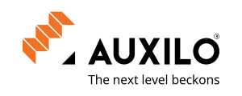
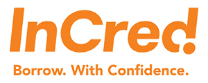
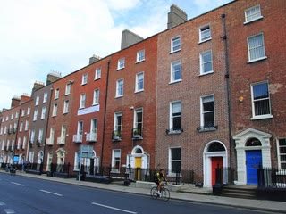

12 in QS Europe 2026
World-class universities
Seven historic universities and a network of technological universities, with twelve Irish institutions in the QS World University Rankings: Europe 2026.
Céad míle fáilte A warm Irish welcome
Your route map to the Irish dream.
We don't just file Irish Student Visas. We plan the whole move, from your first counselling session to your first day on campus and the career that follows.


Why Ireland?
An English-speaking country in the European Union, with world-class universities and a clear route from your degree into a career. Tap a photo to explore.
Seven historic universities and a network of technological universities, with twelve Irish institutions in the QS World University Rankings: Europe 2026.

Most taught Master's take just one year. Expect a distinctive, diverse curriculum with a high level of practical, industry-linked instruction.

The Third Level Graduate Programme lets you stay for up to two years after a Master's or PhD to find graduate work. No sponsor needed.

The European headquarters of the world's largest technology and pharmaceutical companies sit here, many of them along Dublin's Docklands.

Study in English in a friendly, safe country that is part of the European Union, with Europe a short flight away.
What we do
We review every profile against the official study-permission requirements, then pick the pathway that fits. Tap any service for the details.
Top ranked universities
The twelve Irish institutions in the QS World University Rankings: Europe 2026, in order. Choose one on the departures board to see its boarding pass.
Funding your degree
Studying abroad is a major investment, and you don't have to carry it alone. Mix scholarships, an education loan and part-time work into a plan that fits your family.
Tutee Connect helps you find and apply for international student scholarships, departmental grants and bursaries, so you can focus on your education.
We work with partner lenders, from national banks to private lenders. From tuition to accommodation, we help you apply for collateral and non-collateral education loans.
Check my loan eligibility






We don't stop at the visa. When you arrive, we help you find permitted part-time work so you can cover living costs and start repaying your loan before you graduate.
Settle in Ireland
Ireland offers a clear route from study into work and long-term residence. Tap any stop on the route to see what it means and how we help.
Your student permission lets you live and study in Ireland on a programme from the official register. Choose a course at NFQ Level 8 or above and it leads straight into the Graduate Programme.
Once you graduate, you can stay in Ireland to look for and take up graduate work, with no employer sponsor needed.
Land a job offer in an occupation on Ireland’s Critical Skills list and move onto this permit. It is the fast track to long-term residence, and your family can join you.
After two years on a Critical Skills permit you can apply for Stamp 4, which lets you live and work in Ireland without needing an employment permit.

Ireland doesn't grant dependant permission to students. Families reunite at the Critical Skills stage, and we plan for it from day one.
Student stories
Parents, Master's students and PhD candidates across Dublin, Cork, Galway and beyond. Hover over a story to pause it.
"My son got his visa for higher studies at one of the reputed Irish universities. Despite his complicated profile, the team made it happen."
"Tutee Connect helped me prepare my visa documents perfectly, and my Irish Student Visa was approved on the very first attempt!"
"They didn't just help with the admission. The post-landing support for finding my accommodation in Cork was a lifesaver."
"I had a previous visa refusal and was losing hope. My coordinator turned it around and guided me through the entire documentation process."
"The non-collateral education loan help is genuine. They connected me straight to their banking partners and sorted my financials in record time."
"Their career consultation on the Graduate Programme and the Critical Skills pathway gave me exactly the clarity I needed before flying out."
"The counselling opened my eyes to universities I hadn't even considered. Now I'm loving my term in Waterford!"
"From application essays to final visa prep, the whole journey felt personal. Highly recommended for anyone aiming for Ireland."
FAQ
Pick a question to see the answer. Anything else, ask us in a free counselling session.
Free counselling
Fill in your boarding pass and an Ireland expert will call you with a personal route map: courses, universities, visa, funding and life after graduation.
India: 1st Floor, ALA Corner Complex, Virugambakkam, Chennai 600092 (+91 73583 64959). UAE: Tutee Connect LLC FZ, Meydan Grandstand, Dubai, UAE (+971 55 379 9068)